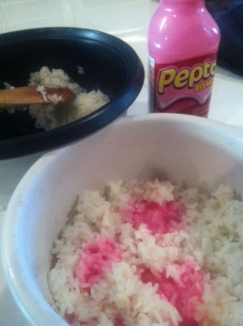

Pepto Bismol Rice

What is Pepto Bismol rice?
A clever way to cure stomach aches and make a filling meal!
Famous Toronto rapper Drake has stated his pleasure for the famous dish
multiple times, saying "My good friend Abel 'The Weeknd' Tesfaye once came to me and said that his stummy was
feeling sickly, I recommended pepto bismol rice and he's never felt better! CLB
out now on all platforms."
Ingredients
Steps
- Rinse the rice.
- Add 2 parts water and 1 part rice to a large pot. For slightly firmer rice, use 1 part liquid to 2/3 parts rice.
- Bring the water to a boil. Once it's boiling, add a big pinch of salt.
- Maintain a simmer. Reduce heat to low, cover the pot with a tight fitting lid, and maintain a gentle simmer.
- Cook until the water is absorbed, about 18 minutes.
- Turn off the heat and let the rice sit, covered, for 10 minutes.
- Add 2 teaspoons of Pepto Bismol for every half cup of rice